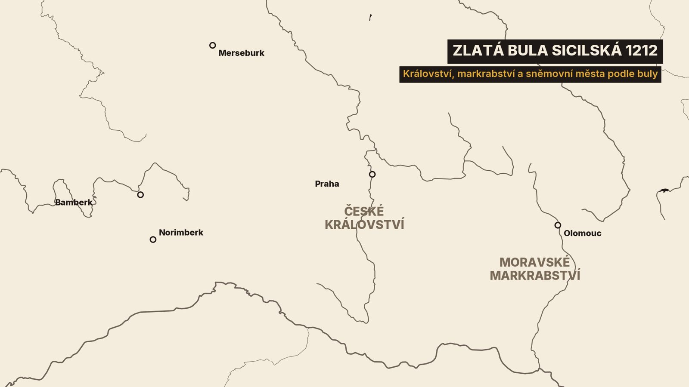
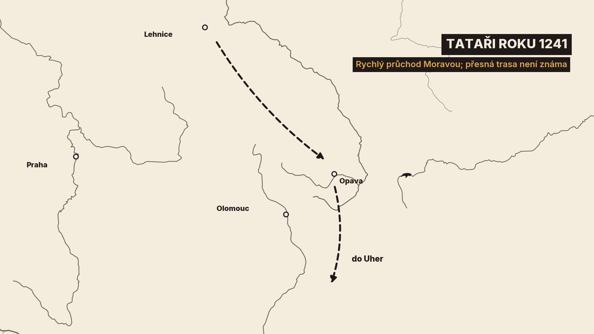

1. Zlatá bula, která není zlatá
V podzemním trezoru Národního archivu v Praze leží listina z pergamenu a visí na ní pečeť. Říkáme jí Zlatá bula sicilská. Jenže ta pečeť není z plného zlata. Je dutá.[9][15]
A není to ani jedna listina. Jsou to tři listiny se třemi pečetěmi. Vydal je týž den, 26. září 1212, ve švýcarské Basileji mladý Fridrich Druhý. Tehdy byl teprve zvoleným římským císařem a zároveň králem Sicílie. A pečetil pečetí své sicilské kanceláře. Odtud to jméno.[3][9][15]
Tu hlavní listinu dostal český král Přemysl Otakar První. Patří k nejslavnějším listinám českých dějin. Národní archiv ji shrnuje tak, že potvrzuje dědičnou královskou hodnost, volbu krále doma v Čechách a hranice českého státu.[3][27]
Jak se k ní Přemysl dostal? Hlavně obratnou politikou. Dlouhé roky přebíhal mezi soupeři, kteří se přeli o vládu v říši.[1][4][8][27]
Dnešní díl je o půlstoletí, za které se z Čech stalo trvalé království. Začneme korunou z roku 1198. Pak přijde rozvod, se kterým měl co dělat i papež, a samotná bula. Uvidíme, jak se král pohádal s biskupem a jak princezna Anežka odmítla císaře. Přijdou nová města a stříbro, strach z Tatarů a nakonec válka otce se synem. Skončíme rokem 1253.[1][3][6]
2. Koruna od Filipa
Na konci minulého dílu se bratři Přemysl a Vladislav Jindřich dohodli. Přemysl vládl v Čechách, Vladislav na Moravě. A Přemysl hned uviděl příležitost.[2]
V říši se tehdy o královský trůn přeli dva muži, Filip Švábský a Ota Čtvrtý. Každý z nich potřeboval spojence. Přemysl se přidal k Filipovi a vytáhl s ním k Rýnu.[2][4][8]
Cestou ale přišla ostuda. Opat Jarloch z Milevska zapsal, že se české vojsko u Würzburgu vzbouřilo. Ozbrojenci opustili své pány a vrátili se domů do Čech. S knížetem zůstali jen páni.[2]
Přesto to vyšlo. 8. září 1198 byl Filip v Mohuči vysvěcen na krále. A Jarloch dodává, že tam Filip učinil králem Čech i našeho knížete.[2]
Našeho knížete vysvěceného činí králem Čech.
Touto zprávou Jarlochova kronika končí. Jako by kronikář cítil, že je to dobrý konec.[2]
Byla to už třetí česká koruna. Před Přemyslem získali královskou hodnost jen dva čeští panovníci, Vratislav Druhý a Vladislav Druhý. Jejich synové už ale králi nebyli. Přemysl chtěl, aby koruna zůstala v rodě.[28]
3. Rozvod a papež
Nový král měl ale doma problém. Asi dvacet let byl ženatý s Adlétou Míšeňskou. Měli spolu syna Vratislava a tři dcery. Teď se jí chtěl zbavit.[7]
Asi počátkem roku 1199 prohlásil pražský biskup jejich manželství za neplatné. Důvod byl příbuzenství ve čtvrtém koleni. Adlétu k jednání vůbec nepustili. Ona se odvolala k papeži Inocenci Třetímu.[7]
Přemysl se mezitím oženil znovu. Novou královnou se stala Konstancie, sestra uherského krále.[1][7]
A pak Přemysl ukázal, jak umí měnit strany. Roku 1203 opustil Filipa a přešel k Otovi Čtvrtému. Ota měl tehdy podporu papeže.[1][8]
Papež Inocenc mu za to napsal list, který se dochoval. Filipova koruna prý neplatí. Filip sám nebyl řádně korunován, a proto nemohl řádně korunovat ani Přemysla.[4]
Protože sám nebyl řádně korunován, nemohl řádně korunovat ani tebe, ani jiného.
V tom listu stojí ještě jedna věc. Před Přemyslem prý nosili v Čechách královský diadém mnozí. Ale papežové je nikdy v listech nenazývali králi. Přemysl je první, koho tak nazývat budou.[4]
Dlouho to nevydrželo. Už roku 1205 se Přemysl vrátil k Filipovi. Podle letopisu za to musel dát rukojmí a sedm tisíc hřiven. A roku 1207 zasnoubil svého syna Václava s Filipovou dcerou Kunhutou.[1]
Spor s Adlétou se táhl přes deset let. Skončil až její smrtí v klášteře u Míšně roku 1211.[7]
4. Tři listiny z Basileje
O pár let později vládl v říši jako císař Ota. Ale ani to nevydrželo. Roku 1211 se Přemysl proti Otovi postavil. A o rok později dorazil do Německa nový uchazeč. Fridrich, král Sicílie.[1][8]
Přemysl byl mezi prvními, kdo se k němu přidal. A Fridrich to v bule výslovně píše. Otakar ho prý jako první mezi knížaty zvolil císařem.[3]
Jako první mezi knížaty, zvláště před ostatními, nás zvolil císařem.
Co v té listině stojí? Fridrich potvrzuje Otakarovi královský titul tak, jak mu ho udělil Filip. Dává mu Království české svobodně a bez jakéhokoli placení. Jemu i jeho nástupcům navěky.[3]
Kdokoli bude v Čechách zvolen králem, má si jen přijet k císaři pro regálie. Dědičnou monarchii listina výslovně nevyhlašuje. Mluví ale o králových nástupcích a dědicích. A historici z ní čtou právě to: koruna patří rodu a krále si volí Čechy sami.[3][4][27]
Král smí biskupy své země uvádět do úřadu. Drží všechny hranice, které ke království patří, ať by jakkoli byly odcizeny. A povinnosti vůči říši jsou malé. Na sněmy musí jezdit jen do Bamberku a Norimberku, výjimečně do Merseburku. A když se císař jede korunovat do Říma, pošle král tři sta oděnců, nebo zaplatí tři sta hřiven.[3][4][27]

Druhé dvě listiny jsou o majetku. Přemysl dostal statky ve Francích a ve Fojtsku. Jeho bratr, moravský markrabě Vladislav Jindřich, dostal území Mocran et Mocran. Co to znamená, se historici přou. Podle jednoho výkladu jde prostě o Moravu, podle jiných to dodnes nikdo neví.[4][9][27]
Mezi svědky buly najdeme i hraběte Rudolfa z Habsburku. To jméno se v našem příběhu ještě vrátí.[3]
A jak je to s tím zlatem? Pečeť je podle archivářů dutá, z tenkého pozlaceného kovu. Opravdu poctivý kus zlata visí až na listině Karla Čtvrtého. Ten bulu potvrdil o sto třicet šest let později, roku 1348.[9][15]
Bula měla i dobrodružný osud. Roku 1750 ji s většinou korunního archivu odvezli do Vídně. Vrátila se až roku 1920. A jméno Zlatá bula sicilská, jak ji dnes známe, se jí ustálilo až za první republiky. Všechny tři listiny byly poprvé vystaveny pohromadě teprve roku 2018.[9][15]
5. Král proti biskupovi
Přemysl hned využil, co získal. Roku 1216 dal svého syna Václava zvolit za krále. Fridrich volbu v Ulmu potvrdil listinou. Kdo by ji porušil, měl zaplatit tisíc liber zlata. Václav je v ní nazván prvorozeným synem, přestože žil ještě Vratislav, syn zapuzené Adléty.[4]
Proti králi se ale postavil pražský biskup Ondřej. Šlo o to, kdo bude rozhodovat o církevních statcích a o kněžích.[1][4][8]
Biskup sáhl po nejsilnější zbrani, jakou měl. 10. dubna 1216 uvalil na Čechy interdikt. V celé zemi se nesměly sloužit mše a nesměli se konat ani církevní pohřby. A sám odešel do Říma.[1]
Interdikt po roce zrušil mohučský arcibiskup. Roku 1219 ho ale Ondřej vyhlásil znovu.[1]
Spor nakonec řešil papežův legát. Papež mu nařídil najít pro biskupa bezpečné místo jednání, protože s králem a jeho pány by to pro něj bylo nebezpečné. Jednání roku 1221 se dochoval zápis. Biskup v něm chce zpět své statky i s listinami. A protestuje, že mu nestačí vrátit pergamen a inkoust.[4]
Nestačí mu, aby mu vrátili pergamen a inkoust.
Legát přiměl obě strany ustoupit. Roku 1222 vydal Přemysl privilegium pro kostely a kláštery. Jedna jeho věta ukazuje, jak to dřív chodilo. Ruší se v ní zvyk, podle něhož byli kněží na hraničním cle považováni za horší než Židé.[4][8]
Biskup Ondřej se ale do Čech už nevrátil. Zemřel roku 1224 ve vyhnanství v Římě.[1]
Roku 1228 byl Václav s manželkou Kunhutou v Praze korunován. A 15. prosince 1230 Přemysl Otakar První zemřel. Poprvé v českých dějinách nastoupil na trůn syn, který už korunu měl.[1]
6. Princezna, která odmítla císaře
Dcera Přemysla a Konstancie se narodila roku 1211. Byla to Anežka. Už jako tříletou ji poslali na vychování do Slezska, k tetě, svaté Hedvice. Pak žila u premonstrátek v Doksanech a od osmi let na dvoře rakouského vévody.[6]
Princezna byla v té době především politická zástava. Zasnoubili ji se synem slezského knížete, potom s Jindřichem, synem císaře Fridricha.[6]
Jak se o takové nevěsty jednalo, ukazuje dopis anglického biskupa z roku 1225. Psal svému králi, že o ruku mladého Jindřicha se přetahují Francie, Uhry, Anglie i Čechy.[4]
Český král prý nabídl třicet tisíc hřiven. Bavorský vévoda přijel s velikou pompou a přihodil dalších patnáct tisíc. Jindřich mu ale prý odpověděl, že si Anežku nikdy nevezme. A o císaři Fridrichovi biskup tlumočil slova kolínského arcibiskupa: nežízní po ničem jiném než po penězích.[4]
Nežízní po ničem jiném než po penězích.
Ze sňatku nic nebylo. O Anežku pak stál sám císař. Dokládá to dopis, který jí napsala svatá Klára z Assisi. Píše v něm, že Anežka mohla být se vší slávou provdána za slavného císaře, ale všechno odmítla.[5][6]
Anežka si vybrala jinou cestu. Na počátku třicátých let dala v Praze na břehu Vltavy postavit klášter pro sestry svaté Kláry a k němu špitál pro chudé a nemocné. V listinách se klášter poprvé objevuje roku 1234. A ve stejném roce do něj sama vstoupila.[6][11]
Anežský klášter patří k nejstarším gotickým stavbám v Čechách. Stavitelé tu brzy přešli od kamenných kvádříků k páleným cihlám.[17][19]
Ze špitálního bratrstva vznikl roku 1237 řád. Jeho bratři později nosili červenou hvězdu. Dodnes jim říkáme křižovníci s červenou hvězdou. A roku 1252 pro ně postavili nový špitál u paty pražského mostu.[1][6]
Abatyší ale Anežka dlouho nebyla. Roku 1238 se té hodnosti vzdala a dál žila jako starší sestra.[6]
I její matka Konstancie založila klášter. U Tišnova na Moravě vznikl cisterciácký klášter Porta coeli, Brána nebes. Založila ho kolem roku 1232, možná o rok později. Dodnes se tam dochoval bohatě zdobený portál. Konstancie zemřela v prosinci 1240 a pohřbili ji právě tam.[1][13]
7. Hradby, stříbro a plecháče
Václav První začal hned po otcově smrti opevňovat Prahu. Letopisec píše, že nechal obehnat zdí pražské město. A dřevem nebo kamenem i další trhové osady, které se v naší řeči nazývají města.[1]
Hradba Starého Města byla podle archeologů přes dva metry silná a asi devět metrů vysoká. Před ní ležel příkop až dvacet metrů široký. Ve zdi stálo asi šestnáct věží. Dokončili ji roku 1253.[1][12][20]
Roku 2017 našli archeologové v Křižovnické ulici jednu z jejích bran. Dlažba tehdejší cesty leží asi pět metrů pod dnešní ulicí.[20]
Města tehdy vznikala po celé zemi. Panovníci zvali do země osadníky, mimo jiné z Porýní, a dávali jim práva podle německých vzorů, třeba podle Magdeburku. Jedna listina z roku 1223 třeba dává moravskému Uničovu stejné právo, jaké už mají měšťané z Bruntálu.[4][8]
Pak se našlo stříbro. Na Jihlavsku se podle archeologických nálezů začalo dolovat pravděpodobně už na konci třicátých let. Od poloviny století zažila Českomoravská vrchovina první velkou stříbrnou horečku.[21]
Na Starých Horách u Jihlavy archeologové odkryli šachty a vedle nich prádelnu rudy. Soustavu kanálů a nádrží, ve kterých se ruda propírala.[22]
Jihlava přitom předtím patřila Konstanciinu klášteru Porta coeli. Když se tam začalo dolovat, přešla zpátky ke koruně.[13][14]
Ze stříbra se razily mince. Už na počátku století se v Čechách začaly razit brakteáty podle míšeňského vzoru. Byly z tak tenkého plíšku, že měly obraz jen z jedné strany. Lidé jim říkali plecháče.[23]
Václav se ale do dějin nezapsal jako stavitel měst. Letopisec o něm píše, že miloval samotu. Bydlel s několika lidmi na malých hrádcích, které si dal postavit. A za jeho vlády se v Čechách roku 1245 poprvé konaly turnaje.[1]
Jeden takový hrad je Týřov nad Berounkou. V pramenech se poprvé objevuje roku 1249. Dlouho se myslelo, že jeho zříceniny jsou z Václavovy doby. Dendrochronologie ale ukazuje, že palác je až z šedesátých let.[26]
8. Tataři a vítězství, které se nekonalo
Roku 1240 zapsal letopisec jedinou větu: na Čechy padl veliký strach z Tatarů.[1]
O rok později vtrhli Mongolové, kterým se tehdy v Evropě říkalo Tataři, do Uher a do Polska. Letopisec píše, že zabili polského knížete Jindřicha i s jeho vojskem. Stalo se to u slezské Lehnice.[1]
Pak prošli Moravou. Vstoupili do ní u Opavy a odešli na jihovýchod do Uher. Byl to rychlý průchod. Hrady ani města nedobývali. A archeologové dodnes nenašli jednoznačný doklad, že tu vůbec byli.[25]

Dlouho se ale vyprávěla jiná verze. Hrdina Jaroslav ze Šternberka porazil Tatary u Olomouce. Ten příběh je výmysl.[10][25]
Rostl postupně. Kronikáři ve čtrnáctém století popletli rok 1241 s obléháním Olomouce o dvanáct let později. Už Pulkava vypráví o výpadu nějakého Šternberka. Jméno Jaroslav mu ale dal až Václav Hájek z Libočan roku 1541. A slavný ho udělala báseň Jaroslav v Rukopisu královédvorském. To je padělek, který se našel roku 1817.[10][25]
Skutečně se u Olomouce bojovalo roku 1253. Proti uherskému vojsku a Kumánům, které s sebou Uhři přivedli. Na obraně města se podle části historiků podílel Zdeslav ze Šternberka.[1][10][25]
A co rok 1241 v Praze? Letopisec si zapsal, že na začátku října odpoledne bylo zatmění Slunce, takže lidé mysleli, že je soumrak. Podle astronomů to bylo 6. října.[1][29]
Lidé mysleli, že je soumrak.
9. Otec proti synovi
Roku 1246 padl rakouský vévoda Fridrich v bitvě s Uhry. Jeho neteř Gertrudu si vzal Václavův syn Vladislav a s ní získal nárok na Rakousy. Jenže už za rok zemřel.[1]
Zbýval mladší syn, Přemysl. A ten se postavil proti otci. 31. července 1248 ho šlechtici v Praze přijali za knížete nebo krále. A přísahali mu věrnost, aniž by otec cokoli věděl.[1]
Aniž by otec cokoli věděl.
Václav se vrátil s vojskem a v srpnu 1249 obsadil Staré Město. Pak oblehl Pražský hrad. Přivedl si k tomu muže z Jihlavy. Podle editora horníky, kteří uměli stavět obléhací stroje.[1]
Na Hradě došla voda a krmivo. Lidé i koně by brzy zemřeli. Král vyhlásil příměří a hned druhý den se dal v kostele svatého Františka, v klášteře své sestry Anežky, slavnostně korunovat. Pak uspořádal hostinu.[1][18]
Syn se podrobil. Se slzami se políbili na usmířenou a Přemysl dostal Moravu. Polovinu jihlavské mince si ale král nechal.[1]
20. srpna vstoupil Václav do Hradu pěšky. Lid i šlechta zpívali Hospodine, pomiluj ny.[1]
O měsíc později přijel Přemysl na hrad Týřov pro slíbenou milost. Otec ho tam dal zatknout a poslat do vězení. Letopisec to komentuje suše: zcela nepamětliv svého slibu. Vzbouřené šlechtice dal v Praze zavřít v řetězech, po dvou.[1]
Zcela nepamětliv svého slibu.
Letopisec si v těch letech zapisoval i podivnosti. Roku 1250 prý padaly trojhranné kroupy a ležely sedm dní. A v prosinci téhož roku shodili dva havrani kámen z vrcholu vězení ve věži u mostu. Spadl na hlavu rytíři Pertoldovi a zabil ho na místě.[1]
Ale bez syna se Václav neobešel. Roku 1251 se Rakousy poddaly českému králi a Přemysl vjel do Vídně. V únoru 1252 se oženil s Markétou, dcerou dřívějšího rakouského vévody Leopolda. Byla vdova a mnohem starší než on.[1]
22. září 1253 Václav První zemřel. Pohřbili ho v kostele svatého Františka v Anežském klášteře. Jeho hrob tam archeologové našli ve dvacátém století.[1][17][18]
Anežka svého bratra přežila o téměř třicet let. Zemřela roku 1282 a pohřbili ji ve stejném klášteře, v kapli Panny Marie.[6][11]
Jenže její hrob je prázdný. Archeologové ho otevřeli roku 1941 a nenašli v něm nic. Hledalo se už v sedmnáctém století a pak znovu roku 2010. Bez úspěchu. Jediná známá část jejích ostatků je dolní čelist. Staletí byla ve španělském Escorialu a do Čech se vrátila roku 1988. Svatou byla Anežka prohlášena o rok později, v listopadu 1989.[6][11]
Za půl století se tak z Čech stalo dědičné království. Bula z Basileje to potvrdila a Václav byl první král, který korunu po otci zdědil.[1][3][27]
Kde podle vás Anežčiny ostatky skončily? Napište nám to do komentáře. A pokud ve výkladu najdete chybu, napište ji do komentáře i se zdrojem.
17. října 1253 přijeli Přemysla do Prahy slavnostně přivítat jako krále. Bývalý vzbouřenec a pán Rakous.[1] Říká se mu král železný a zlatý.[28] O něm bude příští díl.
.jpg){kind=link}


.jpg){kind=link}


.jpg){kind=link}


,_tomb_of_Ottokar_I.jpg){kind=link}


.jpg){kind=link}


.jpg){kind=link}
.JPG){kind=link}


.jpg){kind=link}


_-_T%C3%BD%C5%99ov.jpg){kind=link}


.jpg){kind=link}